Escolha uma região no menu abaixo para saber mais sobre seus elementos,
Arcontes e cultura!
Liyue
Conhecendo Liyue
Liyue é um porto próspero localizado no leste de Teyvat, conhecido
como a nação do contrato. Montanhas imponentes se erguem ao lado de
florestas de pedra, formando, junto com as planícies abertas e os rios
vivos, a paisagem abundante da região.
O elemento associado a Liyue é o Geo, representado pela rocha e pela
terra. A região foi protegida por Morax, o Arconte Geo, também
conhecido como Zhongli, cujo contrato selado há milênios garantiu
prosperidade e estabilidade para o povo local.
A cultura de Liyue está profundamente ligada ao comércio, à tradição e
à honra dos contratos. Seus habitantes valorizam profundamente os
laços de confiança firmados entre pessoas, empresas e até mesmo com os
próprios Adeptos, seres divinos que habitam as montanhas da região.
Liyue é dividida em diferentes áreas, cada uma com sua própria
paisagem e importância histórica, que vão desde planícies banhadas por
rios até florestas de pedra e litorais voltados para o mar.
Principais áreas de Liyue
Liyue é formada por diferentes áreas, cada uma com suas próprias
paisagens, características e locais importantes.
A Planície de Bishui é uma área localizada em Liyue, atravessada
pelo Rio Bishui. Segundo a lenda, o rio se formou a partir do sangue
do Adeptus Skybracer, que sacrificou seus chifres para sustentar o
Monte Tianheng. A região reúne planícies verdejantes, pequenas vilas
e importantes pontos comerciais, sendo uma das primeiras áreas
exploradas por quem chega a Liyue.
Subáreas: Pântano de Dihua, Vila Qingce, Sal
Terrae, Portão de Pedra, Pousada Wangshu, Colina Wuwang.
Pântano de Dihua
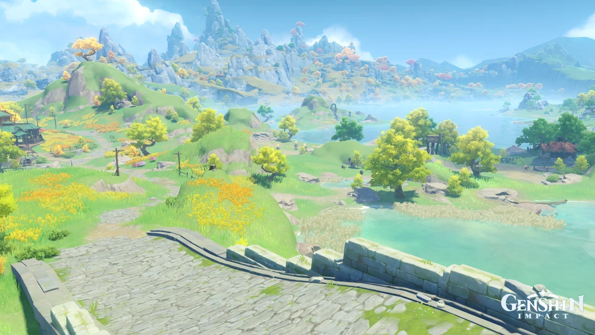
Imagem: GenshinImpactWiki
O Pântano de Dihua é uma área pantanosa da Planície de Bishui, onde
o Rio Bishui se divide em dois braços: um segue em direção à Adega
Dawn, em Mondstadt, e o outro deságua no Estuário de Qiongji. O
local é marcado por vegetação densa e terrenos alagados.
Vila Qingce
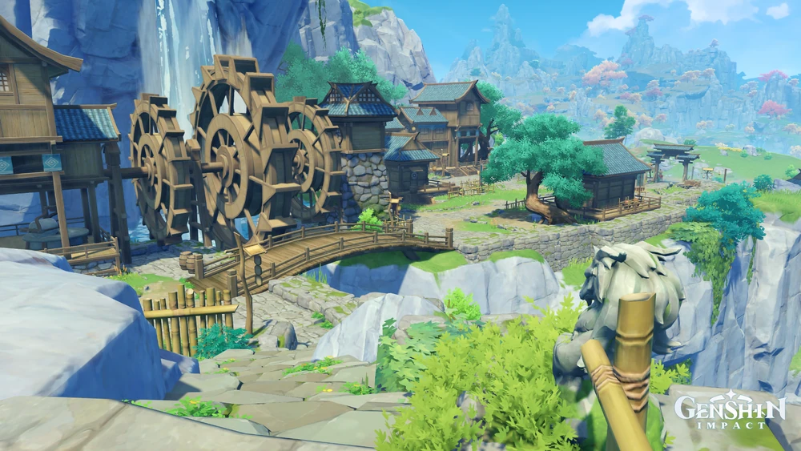
Imagem: GenshinImpactWiki
A Vila Qingce é uma pacata comunidade agrícola situada entre
montanhas, conhecida por suas plantações em terraços e por sua
atmosfera tranquila. É um dos poucos lugares em Liyue onde os
moradores vivem principalmente da agricultura, longe da agitação
comercial do porto.
Sal Terrae
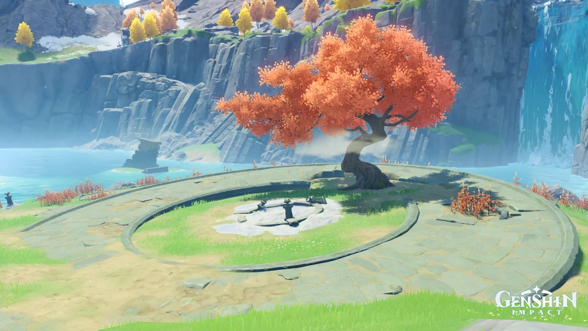
Imagem: GenshinImpactWiki
Sal Terrae é uma região árida e rochosa da Planície de Bishui,
marcada por formações salinas e ruínas antigas trancadas atrás de
mecanismos, guardando segredos relacionados à história de Liyue e de
seus antigos habitantes.
Portão de Pedra
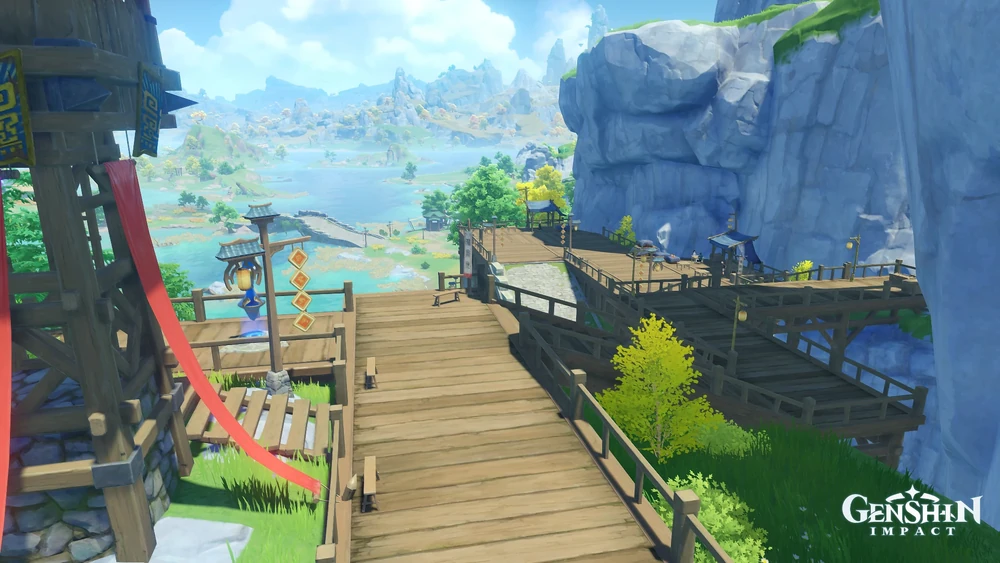
Imagem: GenshinImpactWiki
O Portão de Pedra é uma passagem natural formada por grandes rochas,
servindo como um dos caminhos que conectam a Planície de Bishui a
outras regiões de Liyue. O local possui uma paisagem marcada por
penhascos e formações geológicas.
Pousada Wangshu
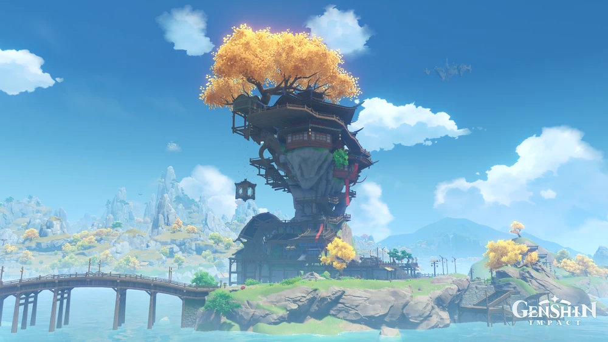
Imagem: GenshinImpactWiki
A Pousada Wangshu é uma hospedaria construída sobre um grande
rochedo, oferecendo um dos pontos de observação mais bonitos de
Liyue. É administrada por Verr Goldet e famosa por seus pratos, além
de ser um local de descanso popular entre viajantes e comerciantes.
Colina Wuwang
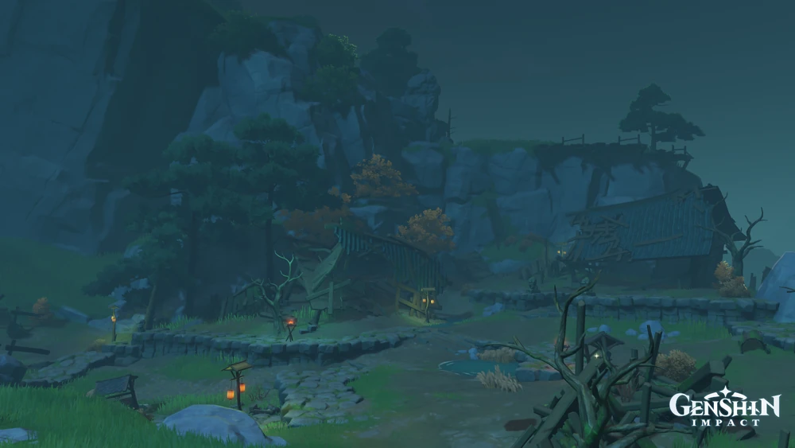
Imagem: GenshinImpactWiki
A Colina Wuwang é conhecida por sua atmosfera sombria, já que o céu
sobre ela permanece sempre acinzentado, independentemente do
horário. O local é palco de diversas lendas sombrias contadas pelos
moradores da Vila Qingce e é frequentemente usado como teste de
coragem entre os jovens da região.
2. Lisha
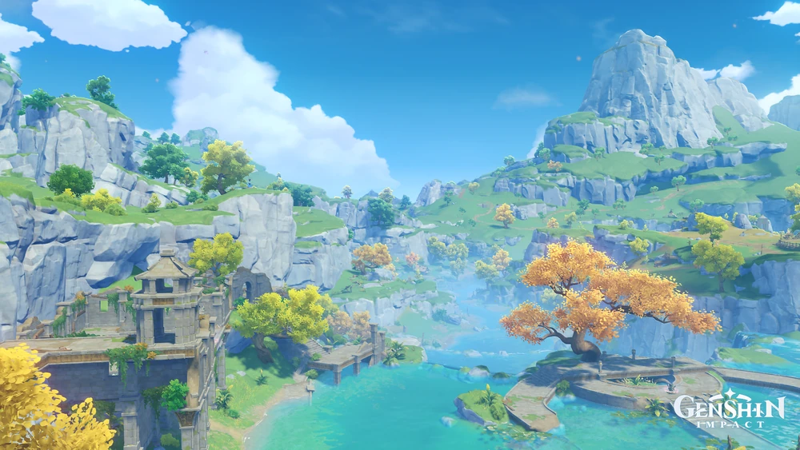
Imagem: GenshinImpactWiki
Lisha é uma região montanhosa de Liyue, marcada por picos rochosos,
ruínas antigas e paisagens áridas. A área guarda vestígios de
civilizações passadas e é um importante ponto de estudo para
arqueólogos e pesquisadores de Liyue Harbor.
Subáreas: Ruínas de Dunyu, Passe Lingju, Piscina
Qingxu.
Ruínas de Dunyu
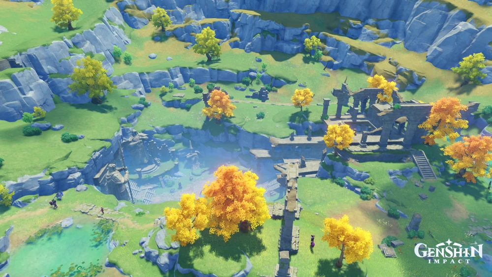
Imagem: GenshinImpactWiki
As Ruínas de Dunyu são vestígios de uma antiga civilização
localizados em Lisha. O local guarda estruturas desgastadas pelo
tempo e é um dos pontos de interesse histórico mais notáveis da
região.
Passe Lingju
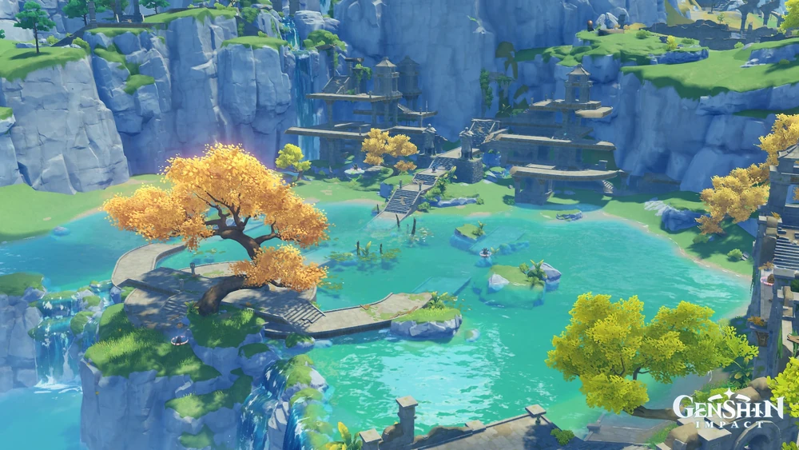
Imagem: GenshinImpactWiki
O Passe Lingju é uma passagem montanhosa que corta Lisha, servindo
como rota entre diferentes pontos de Liyue. O terreno acidentado e
os penhascos elevados marcam a paisagem dessa área.
Piscina Qingxu
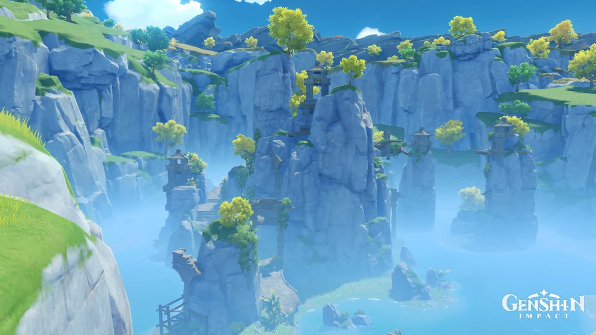
Imagem: GenshinImpactWiki
A Piscina Qingxu é uma área com formações aquáticas cercada por
rochas e vegetação, localizada em Lisha. O local possui uma paisagem
tranquila em contraste com o restante do terreno acidentado da
região.
3. Minlin
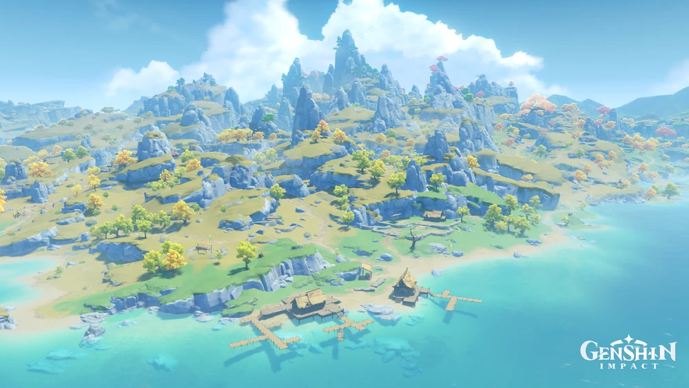
Imagem: GenshinImpactWiki
Minlin é uma vasta região montanhosa de Liyue, conhecida por suas
florestas de pedra, picos elevados e vales profundos. É uma das
maiores áreas de Liyue, reunindo diversas subáreas com paisagens e
características únicas, incluindo formações rochosas famosas em todo
Teyvat.
Subáreas: Encosta Cuijue, Floresta de Pedras de
Huaguang, Jueyun Karst, Monte Aocang, Monte Hulao, Nantianmen, Pico
Qingyun, Vale de Tianqiu.
Encosta Cuijue
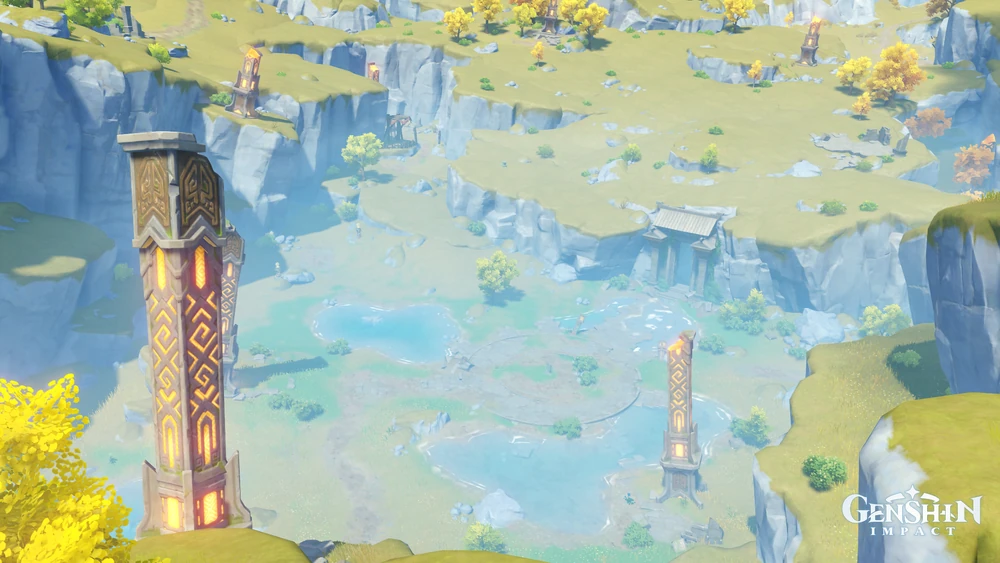
Imagem: GenshinImpactWiki
A Encosta Cuijue é uma área montanhosa de Minlin, marcada por
trilhas íngremes e vegetação espalhada pelas encostas. O local
conecta diferentes pontos da vasta região de Minlin.
Floresta de Pedras de Huaguang
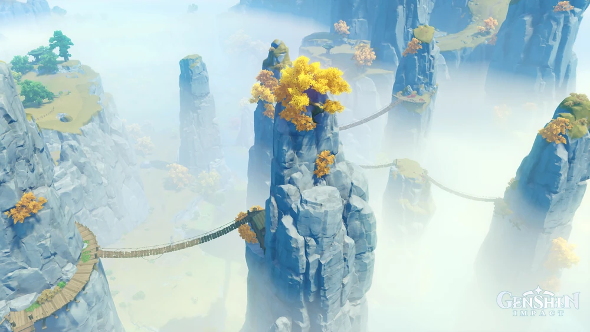
Imagem: GenshinImpactWiki
A Floresta de Pedras de Huaguang é formada por grandes colunas de
pedra que se erguem em meio à vegetação, criando uma paisagem única
dentro de Minlin. O local é um dos pontos mais fotografados da
região por sua formação geológica peculiar.
Jueyun Karst
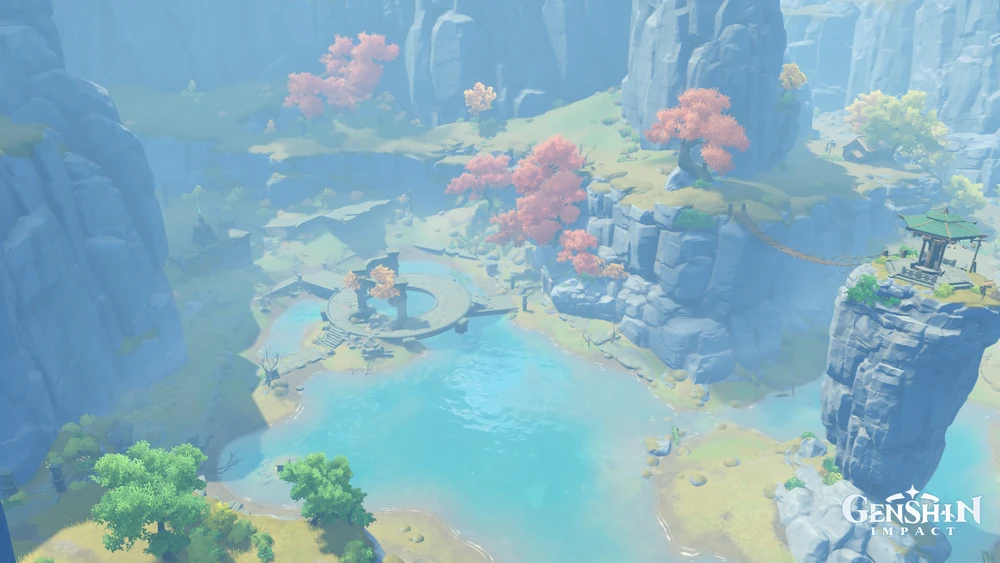
Imagem: GenshinImpactWiki
Jueyun Karst é uma formação rochosa vertical famosa em Liyue,
conhecida por abrigar a Pimenta Jueyun, um ingrediente culinário
bastante utilizado na região. O local é composto por picos estreitos
e íngremes.
Monte Aocang
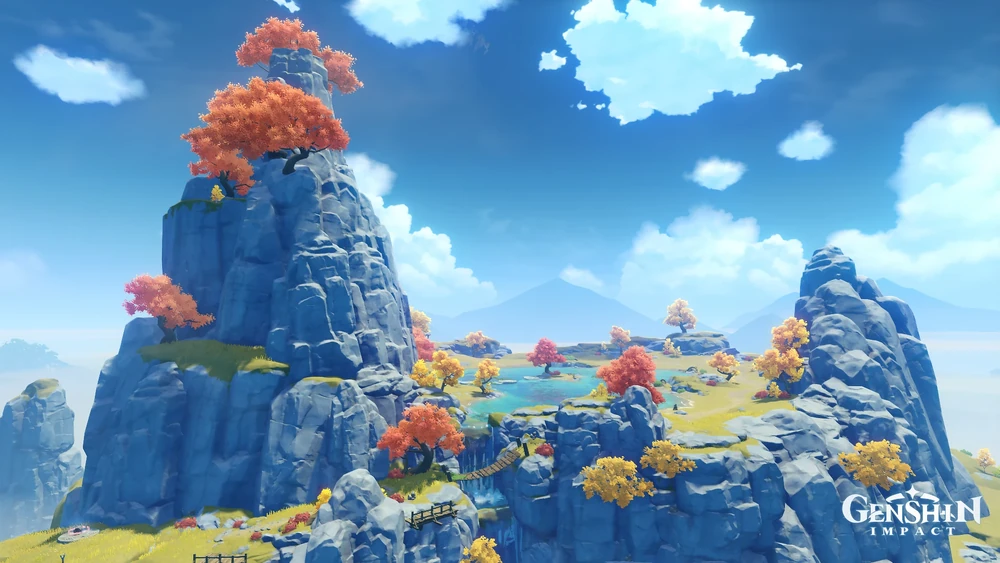
Imagem: GenshinImpactWiki
O Monte Aocang é uma das montanhas que compõem Minlin, apresentando
uma paisagem elevada e rochosa. O local é um dos pontos que marcam a
extensão territorial da região.
Monte Hulao
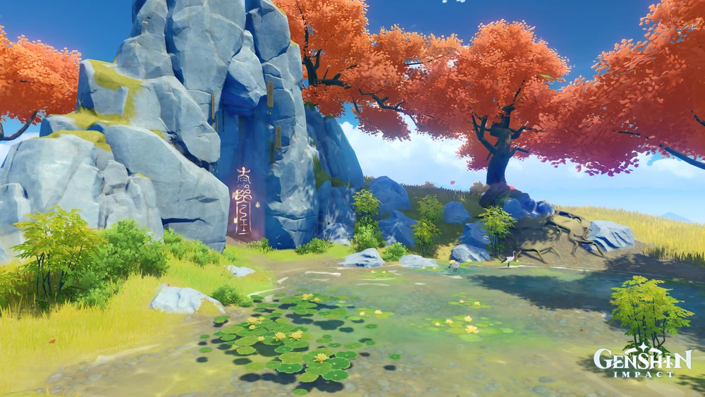
Imagem: GenshinImpactWiki
O Monte Hulao é uma montanha localizada em Minlin, caracterizada por
seu terreno acidentado e vistas privilegiadas da região ao redor.
Nantianmen
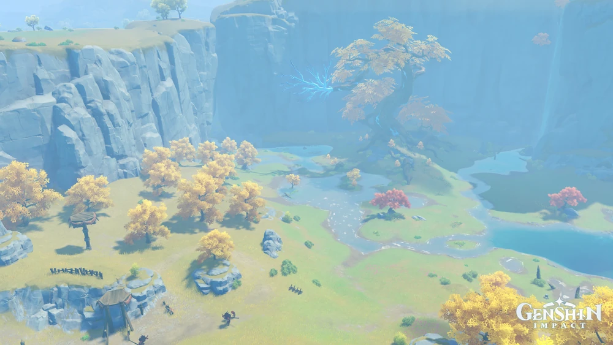
Imagem: GenshinImpactWiki
Nantianmen é uma área de Minlin que abriga a estátua monumental do
Domador de Dragões, um marco histórico que testemunhou antigas
batalhas envolvendo dragões em Liyue. O local possui grande
importância cultural e histórica para a região.
Pico Qingyun
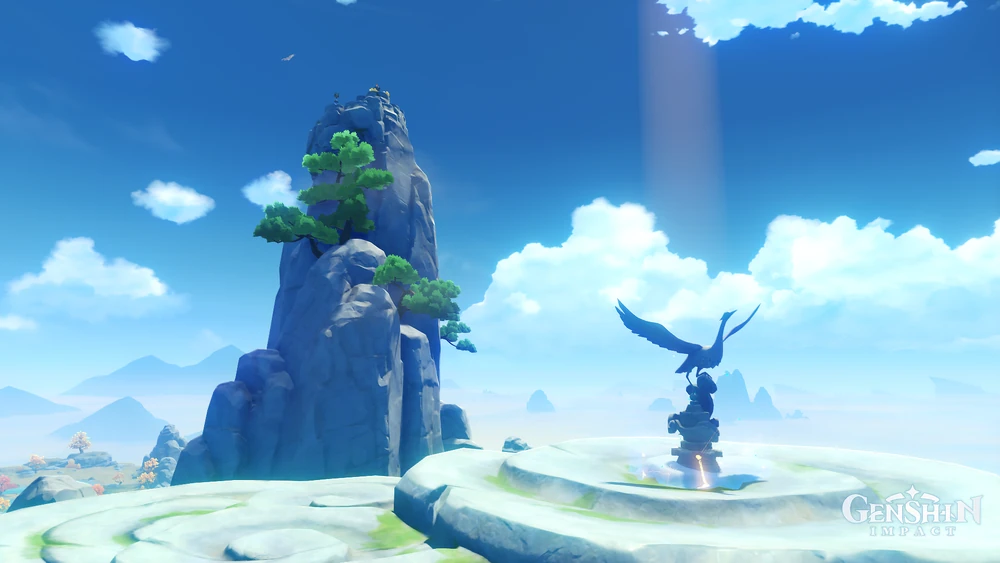
Imagem: GenshinImpactWiki
O Pico Qingyun é um dos pontos mais altos de Minlin, oferecendo uma
vista panorâmica de grande parte de Liyue. O local é conhecido por
sua paisagem serena e elevada.
Vale de Tianqiu
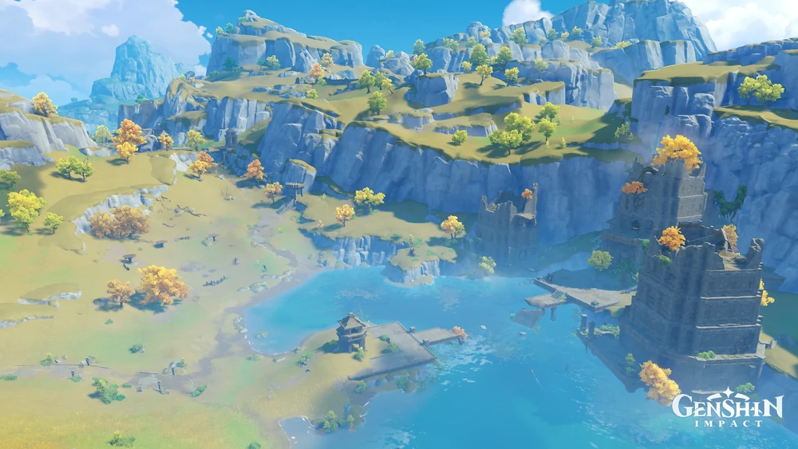
Imagem: GenshinImpactWiki
O Vale de Tianqiu é uma área de Minlin conhecida por abrigar
Geovishaps, criaturas associadas ao elemento Geo. O local possui uma
paisagem de vale cercado por montanhas.
4. Estuário de Qiongji
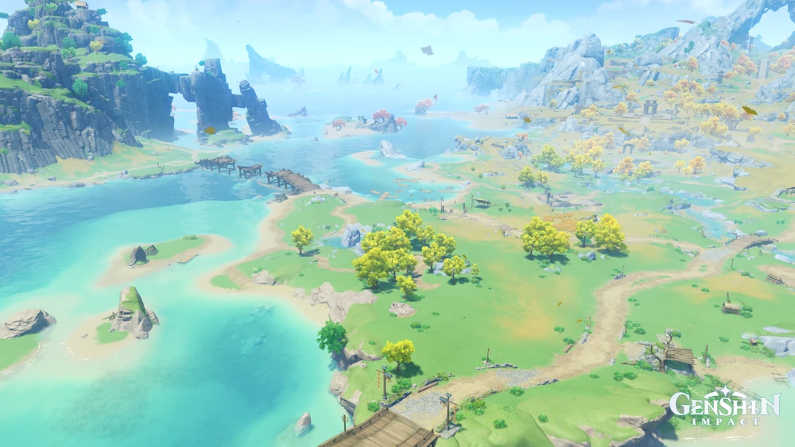
Imagem: GenshinImpactWiki
O Estuário de Qiongji é a área onde o Rio Bishui deságua, formando
planícies costeiras e lagoas que se estendem em direção ao Mar de
Nuvens. A região reúne aldeias pacatas e paisagens que combinam água
doce e vegetação litorânea.
Subáreas: Planícies de Guili, Piscina Luhua, Aldeia
Mingyun, Banco de areia de Yaoguang.
Planícies de Guili
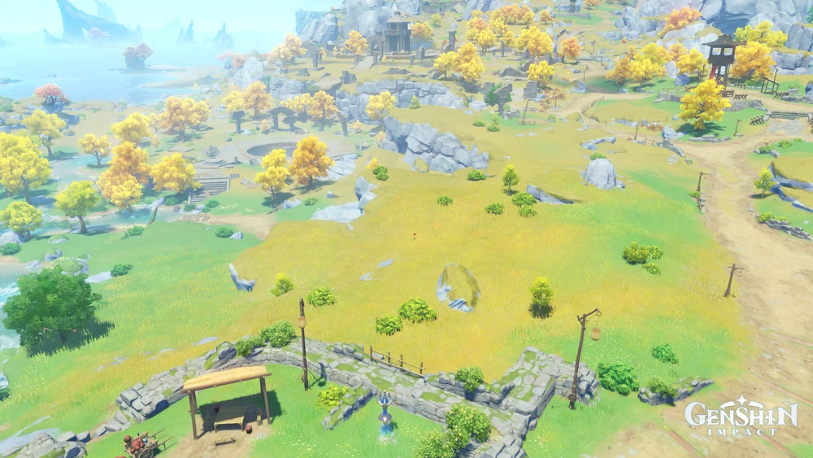
Imagem: GenshinImpactWiki
As Planícies de Guili são uma extensa área verde do Estuário de
Qiongji, onde o Rio Bishui segue seu curso final antes de desaguar
no mar. O local possui uma paisagem tranquila, marcada por campos
abertos.
Piscina Luhua
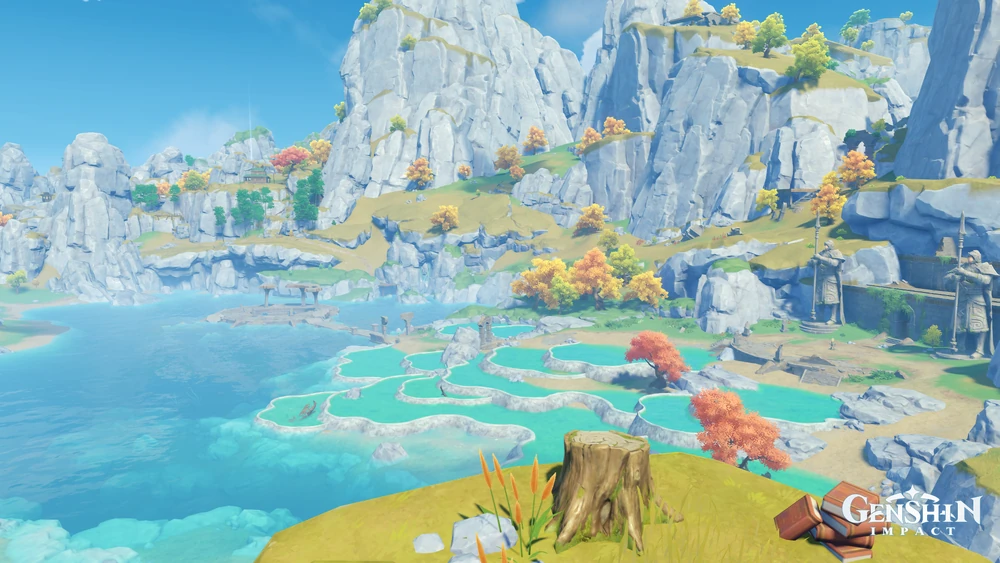
Imagem: GenshinImpactWiki
A Piscina Luhua é uma área alagada do Estuário de Qiongji, cercada
por vegetação e pequenas elevações rochosas. O local compõe parte da
paisagem aquática característica da região.
Aldeia Mingyun
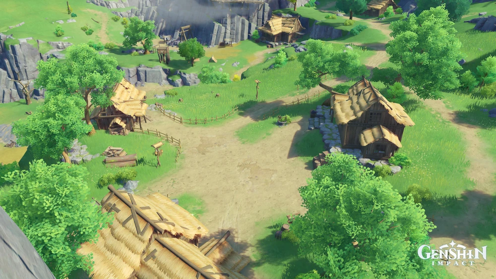
Imagem: GenshinImpactWiki
A Aldeia Mingyun é uma pequena comunidade pesqueira localizada no
Estuário de Qiongji. Seus moradores vivem principalmente da pesca e
do comércio local, mantendo um estilo de vida simples e ligado ao
mar.
Banco de areia de Yaoguang
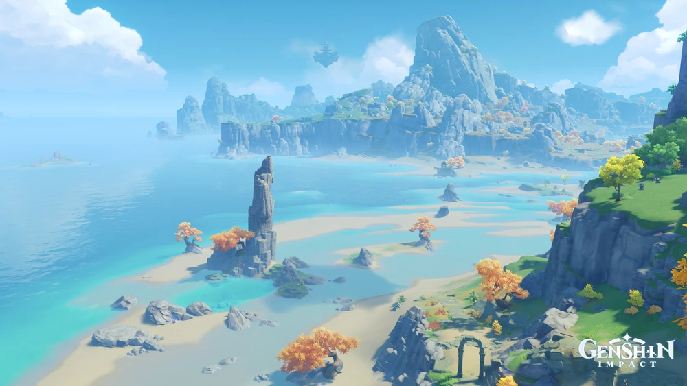
Imagem: GenshinImpactWiki
O Banco de areia de Yaoguang é uma faixa costeira arenosa do
Estuário de Qiongji, marcando a transição entre o rio e o mar. O
local possui uma paisagem litorânea aberta e ventosa.
5. Mar de Nuvens
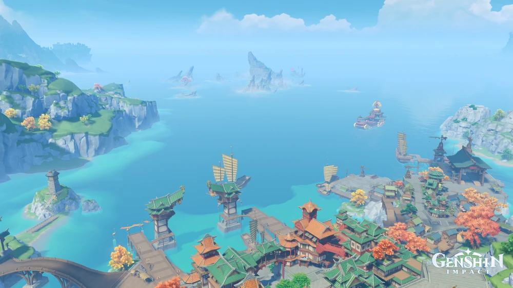
Imagem: GenshinImpactWiki
O Mar de Nuvens é a região costeira mais ao sul de Liyue, banhada
pelo oceano e marcada por formações rochosas que se erguem sobre a
água. O local abriga o porto principal da região e importantes
marcos naturais e históricos ligados à fundação de Liyue Harbor.
Subáreas: Floresta de Pedra Guyun, Porto de Liyue,
Monte Tianheng.
Floresta de Pedra Guyun
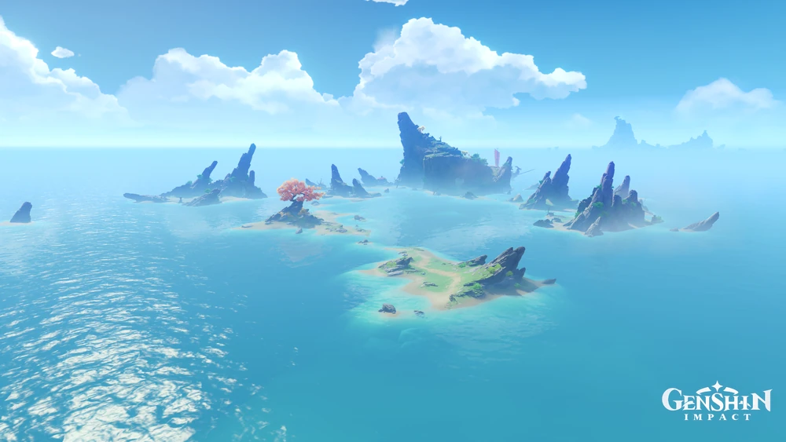
Imagem: GenshinImpactWiki
A Floresta de Pedra Guyun é formada por imensos pilares de pedra que
se erguem diretamente do mar, criando uma das paisagens mais
icônicas de Liyue. O local está profundamente ligado às lendas dos
Adeptos e à história antiga da região.
Porto de Liyue
Imagem: GenshinImpactWiki
O Porto de Liyue é a capital da região e um dos maiores centros
comerciais de Teyvat. A cidade é conhecida por sua arquitetura
tradicional, seus mercados movimentados e por ser o coração político
e econômico de Liyue, além de abrigar o Escritório Wangsheng e a
Guilda de Comerciantes.
Monte Tianheng
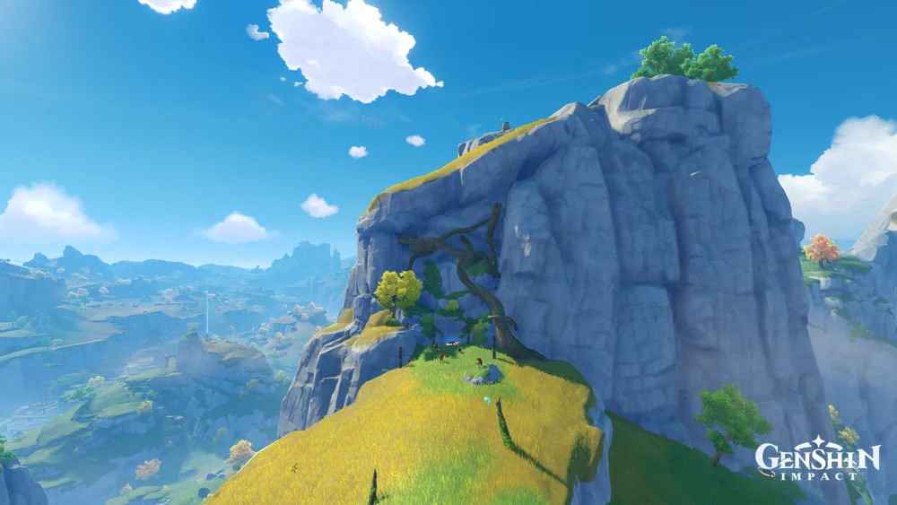
Imagem: GenshinImpactWiki
O Monte Tianheng é uma montanha imponente que domina a paisagem do
Mar de Nuvens. Segundo a lenda, sua estrutura foi sustentada pelos
chifres do Adeptus Skybracer, que sacrificou parte de si mesmo para
evitar que a montanha desabasse sobre os moradores.